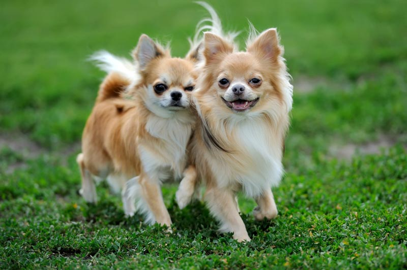

Pet Channel
| ชิวาวา (Chihuahua) |
|  |
ลักษณะทั่วไป ชิวาวา เป็นสุนัขขนาดเล็ก ถือว่าตัวเล็กที่สุดในโลก!! หูมีขนาดใหญ่ ดวงตากลมโต เหมาะที่จะใช้เลี้ยงเป็นเพื่อน ชอบออกไปเดินเล่นกับเจ้าของ เห่าเสียงดัง ค่อนข้างติดเจ้าของและไม่ทำลายข้าวของ ชิวาวาหรือเจ้าชิวาว่ามีต้นกำเนิดที่ประเทศเม็กซิโก ชาวพื้นเมืองนิยมเลี้ยงเพราะมีความเชื่อถือในเรื่องโชคลางต่างๆ จนถึงขั้นมีการนำชิวาวาไปใช้ในพิธีบูชายันต์!! ชิวาวาเป็นสุนัขมีความฉลาดและจงรักภักดีต่อเจ้าของมา กเมื่อเทียบกับสุนัขพันธุ์อื่นๆ โดยปกติมักเป็นสุนัขที่เงียบสงบไม่ค่อยเห่าส่งเสียงร บกวน เว้นแต่จะถูกรบกวนหรือทำตกใจจึงจะเห่าเพื่อรักษาที่อ ยู่อาศัยของตัวเอง นอกจากนี้ยังมีนิสัยกล้าหาญมักจะยืนหยัดต่อสู้กับสุนัขตัวอื่นๆ ไม่ว่าจะใหญ่หรือเล็กกว่า แต่ก็มีอัธยาศัยที่ดีกับสุนัขตัวอื่นหรือสัตว์เลี้ยง ชนิดอื่นๆ |